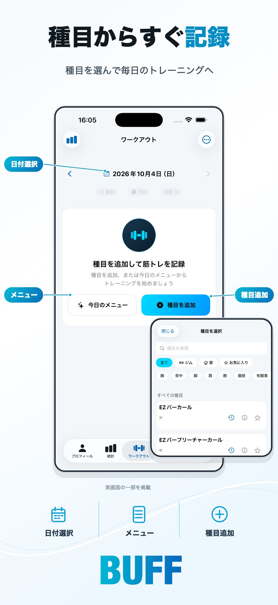

THE COLLECTION
あなたの毎日に
どれを足す？
気になるアプリを見つけてください。
すべてのアプリを9件表示しています。


公開状況は時点です。審査中には公開済みアプリの更新版を含みます。
A CLOSER LOOK
使う毎日を
少しだけ想像してみる。

 BUFF
BUFF
トレーニングに
集中するために。
前回の記録を確かめて
そのまま次のセットへ。
記録も振り返りもひとつに。
 おもいでドロップ
おもいでドロップ
忘れていた一日と
ふいに出会う。
去年の今日も
もっと前の今日も。
同じ日に撮った写真ともう一度。
 Fotrail
Fotrail
写真のそばに
歩いた道を。
GPSの記録と写真の時刻を照合。
撮影場所をあとから振り返ると
旅の記憶がもう少し鮮やかに。
OUR PHILOSOPHY
小さくつくって毎日を少しよくする。
日々の暮らしにそっと寄り添う。
そんな小さなアプリをこれからもつくり続けます。